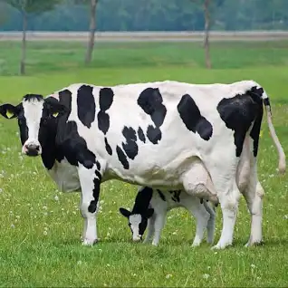
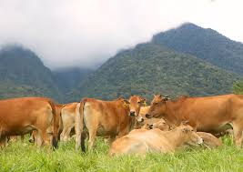
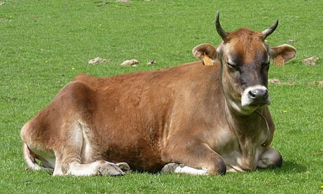

1. FRISIAN HOLSTAIN

Merupakan jenis sapi yang sangat populer baik di Indonesia ataupun mancanegara. Tentu saja karena perpaduan warna yang banyak digambarkan oleh berbagai produk susu sapi dan olahanya.
Tidak hanya populer, sapi dengan ciri fisik hitam bercampur putih ini juga didaulat sebagai ikon sapi perah di seluruh dunia tentu saja karena populasinya sangat banyak, beberapa negara seperti Amerika Serikat memiliki populasi sapi perah friesian holstein sebesar 80%.
Sapi ini berasal dari Provinsi Friesian, Belanda, dan mulai dikenal oleh masyarakat indonesia sejak abad 18. Hingga kini sapi friesian masih menjadi primadona peternak sapi di Indonesia.
Meski termasuk jenis sapi perah subtropis, sapi ini mampu menghasilkan susu yang cukup banyak. Penelitian yang dilakukan menunjukkan bahwa seekor sapi friesian holstein mampu menghasilkan 15 - 20 liter susu per hari, siklus laktasi sapi friesian holstein berkisar 4000 – 6000 liter setiap tahunya.
2.JERSEY

Merupakan sapi subtropis hibrida yang berasal dari Jersey, Inggris. Ciri khas sapi ini yaitu terletak pada warna tubuh yang tidak konsisten pada setiap jenisnya.
Sapi ini memiliki warna tubuh hitam, cokelat tua, cokelat muda, cokelat kekuningan, atau cokelat keputihan. Inkonsistensi warna tubuh tersebut disebabkan oleh asal muasal sapi hibrida ini yang merupakan persilangan antara banteng dengan sapi normandia.
Persilangan tersebut juga menyebabkan tanduk sapi ini lebih panjang dibanding jenis sapi perah lainya. Namun bobot sapi ini termasuk ringan, yaitu sekitar 400 kg
Ketika memasuki puncak masa laktasi, sapi jersey dapat memproduksi susu hingga 2200 liter, atau sekitar 5 hingga 7 liter per harinya.
3. BROWN SWISS

Sesuai namanya, sapi brown swiss awalnya berasal dari dataran tinggi Swiss. Spesies sapi yang satu ini terbilang sangat produktif, terutama ketika memasuki musim semi, dikarenakan banyak peternak menggemba sapi ini di sekitar padang rumput basah.
Kelebihan utama dari sapi brown swiss yaitu dapat dimanfaatkan daging dan susunya. Tekstur dagingnya yang cukup padat dan empuk menjadikan salah satu jenis yang digemari untuk dikonsumsi.
Selain itu, satu ekor sapi brown swiss mampu menghasilkan susu segar sebanyak 600 liter per tahun, dengan bobot betina rata-rata sekitar 700 kg. Pada masa laktasi, susu yang dihasilkan dari sapi ini berkisar 3000 liter. Susu sapi ini sangat rendah kandungan lemak, sehingga lebih sehat dikonsumsi.